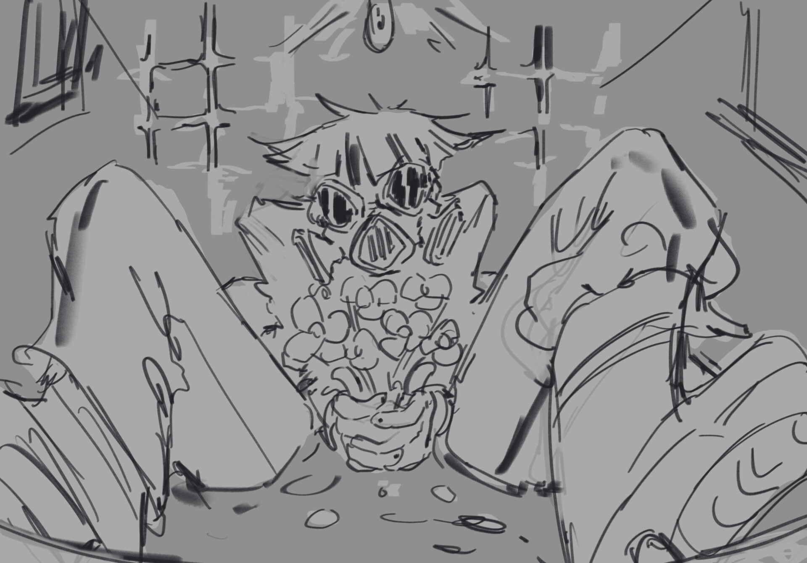
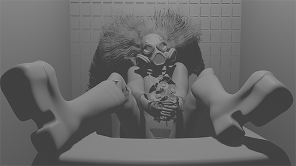
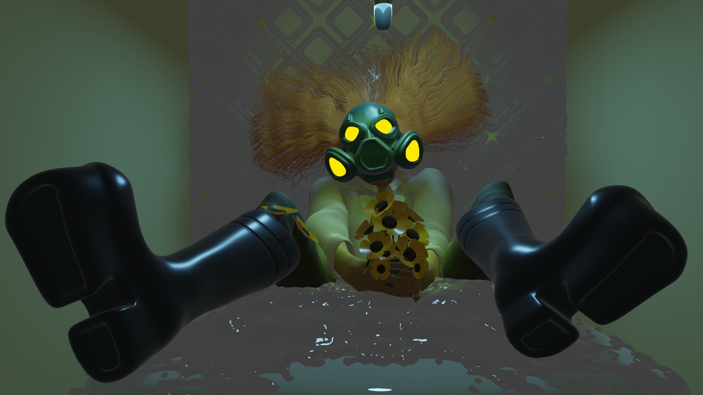
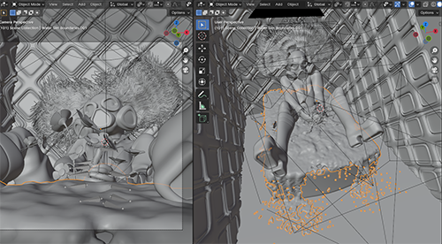
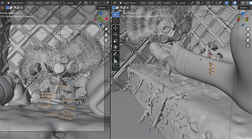

CLOWN BATH
Character Model





3D model inspired by the illustration Clown Tub.
Initially a final project for a Junior seminar class, I really wanted to focus on lighting and reflection in the model and setting. I began implementing the more curious elements that usually appear in my illustrations, such as clowns, masks, and symbolic elements such as flowers.